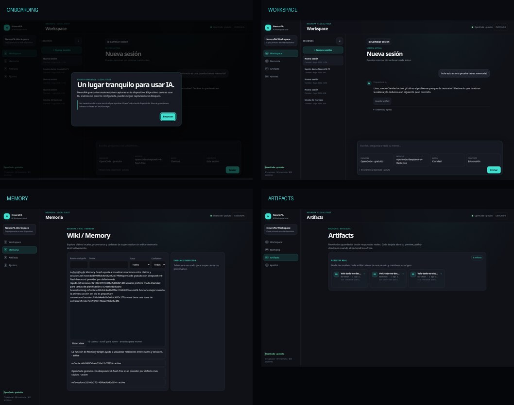
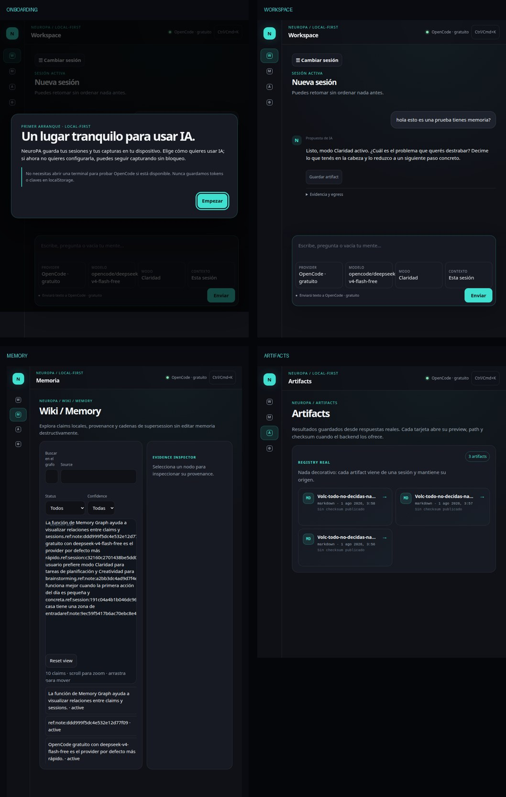
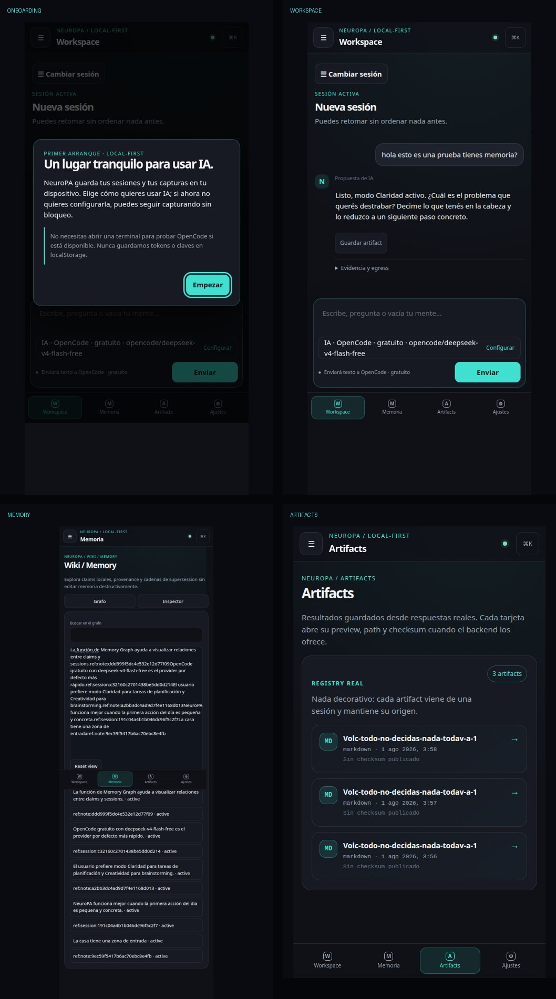

Fortaleza
Workspace tranquilo
Una conversación domina el centro. El fondo oscuro, el acento único y el espacio negativo reducen competencia visual.
La base es sólida y usable. El bloqueo no es estético: una persona con atención fragmentada todavía debe traducir infraestructura para retomar una sesión, entender su memoria y confiar en dónde viaja su texto.
La interfaz ya es tranquila, consistente y mobile-safe. El siguiente pase debe hacer visible el grafo real, nombrar sesiones automáticamente, traducir decisiones técnicas a lenguaje humano y recuperar de forma segura los resultados guardados. Nada más.
NeuroPA no necesita otro lenguaje visual. Necesita que el lenguaje actual sirva a quien llega cansado, distraído o sobrecargado.
Una conversación domina el centro. El fondo oscuro, el acento único y el espacio negativo reducen competencia visual.
Los 11 controles visibles del Workspace cumplen 44 px; la navegación inferior tiene cuatro destinos y no existe overflow horizontal.
La app bloquea el envío sin sesión, separa provider/modelo y conserva controles de privacidad. La intención es correcta; el copy debe traducirla.
Recorridos browser reales con onboarding, Workspace, Memoria, Guardados y Ajustes.

Desktop · 1600Buena calma; controles y copy demasiado pequeños/técnicos.
Tablet · 768Workspace sólido; Memoria se convierte en texto denso.
Mobile · 480Thumb zone correcta; Settings y Memoria castigan la atención.2/8 criterios ADHD pasan; 6/8 fallan. Concluye que Workspace se acerca al job, mientras Memoria/Guardados exponen el modelo técnico.
Sin P0. Confirma P1 en SVG real, recuperación de Guardados y Settings pública; separa HTTP 200 de utilidad semántica.
Side-tab y single-font son bajo valor contextual; dark-glow requiere revisión acotada. No se rediseña para “poner verde” el detector.
La promesa es recuperar contexto sin convertir la organización en otra obligación.
Abre sesiones y encuentra tres “Nueva sesión”. Debe entrar una por una para reconocer el tema. La app recuerda, pero no ayuda a reconocer.
Lee provider, model, BYOK, egress y LAN CIDR antes de una respuesta humana. La transparencia técnica se convierte en carga cognitiva.
Entra a Memoria, pero ve texto concatenado y referencias internas. Los nodos no se renderizan, por lo que el inspector no puede enseñar procedencia.
Sin P0 global: el chat funciona. Hay tres P1 que bloquean promesas centrales y dos P2 de claridad/honestidad.
| Sev. | Problema público | Impacto | Fix mínimo | Esfuerzo |
|---|---|---|---|---|
| P1 | Grafo invisible | No se puede explorar ni inspeccionar memoria. | SVG nativo real con createElementNS; prueba geométrica y visual. | ~90 min |
| P1 | Sesiones genéricas | Retomar contexto exige ensayo y error. | Título determinista desde el primer mensaje, una sola vez. | ~60 min |
| P1 | Settings de ingeniería | Privacidad y coste quedan enterrados bajo jerga/model IDs. | Tres decisiones arriba; infraestructura bajo “Detalles técnicos”. | ~90 min |
| P2 | Guardados prometen preview | La tarjeta abre “Sin preview” + path crudo. | GET autenticado de lectura segura + preview escapado del markdown existente. | ~75 min |
| P2 | Idioma híbrido | El usuario traduce Evidence/Confidence/Status/Artifact. | Origen, Confianza, Estado y Guardados; términos técnicos secundarios. | incluido |
Buena base visual, reconocimiento y match con lenguaje real son los déficits dominantes.
| # | Heurística | Score | Lectura |
|---|---|---|---|
| 1 | Visibilidad del estado | 3/4 | Loading, status y toasts existen; faltan estados perceptuales del grafo. |
| 2 | Match sistema / mundo real | 1/4 | Provider, egress, BYOK, checksum, raw IDs y path dominan. |
| 3 | Control y libertad | 2/4 | Hay cambio de sesión y back; no hay reconocimiento/rename. |
| 4 | Consistencia | 2/4 | Estilo consistente; lenguaje español/inglés mezclado. |
| 5 | Prevención de errores | 3/4 | Session-first y privacidad bloquean estados inválidos. |
| 6 | Reconocimiento vs recall | 1/4 | “Nueva sesión” obliga a recordar contenido sin pistas. |
| 7 | Flexibilidad y eficiencia | 2/4 | Command palette y keyboard; shortcut irrelevante visible en móvil. |
| 8 | Minimalismo | 3/4 | Workspace limpio; Settings y Memory rompen la calma. |
| 9 | Recuperación de errores | 2/4 | Mensajes preservan datos, pero algunos estados no guían suficiente. |
| 10 | Ayuda y documentación | 1/4 | Onboarding existe; no hay ayuda contextual para jerga/provenance. |
Tiempo estimado total: ~6 h 15 min. Cada bloque empieza con RED y termina con evidencia real.
Corregir namespace, labels acotados, selección e inspector humano.
Título local desde primer mensaje; no LLM, modal ni endpoint.
Onboarding/Settings por resultado; detalles técnicos colapsados.
Lectura autenticada segura del markdown existente, título legible, origen/fecha y preview escapado.
Flujos reales en 1600/768/480, geometría SVG, reload y cero errores.
Handoff con hashes del árbol vivo, allowlist, protected files, orden de bloques, RED/GREEN y ceiling de autoridad.
GLM no puede resetear, restaurar, reescribir el frontend, tocar auth/LAN, añadir dependencias, crear endpoints ni hacer commit. Si un hash B0 no coincide, debe detenerse con BASELINE_DRIFT. Su único cierre válido es IMPLEMENTATION_COMPLETE_PENDING_HERMES_ZERO_TRUST_REVIEW.
Questions skipped: el público, la intención y el scope ya están definidos en PRODUCT.md y por N30: resolver todos los hallazgos priorizados con YAGNI, sin reabrir dirección visual.